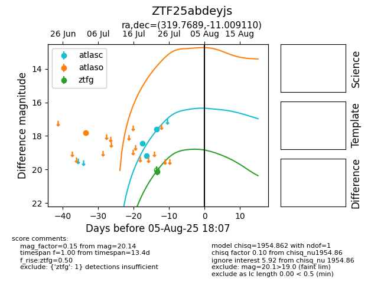

Target ZTF25abdeyjs at 2025-08-05 18:07, see:
FINK: fink-portal.org/ZTF25abdeyjs
Lasair: lasair-ztf.lsst.ac.uk/objects/ZTF25abdeyjs
ALeRCE: alerce.online/object/ZTF25abdeyjs
alt names
ZTF25abdeyjs (ztf,fink)
coordinates:
equatorial (ra, dec) = (319.7689,-11.00911)
galactic (l, b) = (40.1099,-37.71428)
photometry
last atlasc=17.61, atlaso=17.79, ztfg=20.14
3 atlasc, 1 atlaso, 1 ztfg detections
